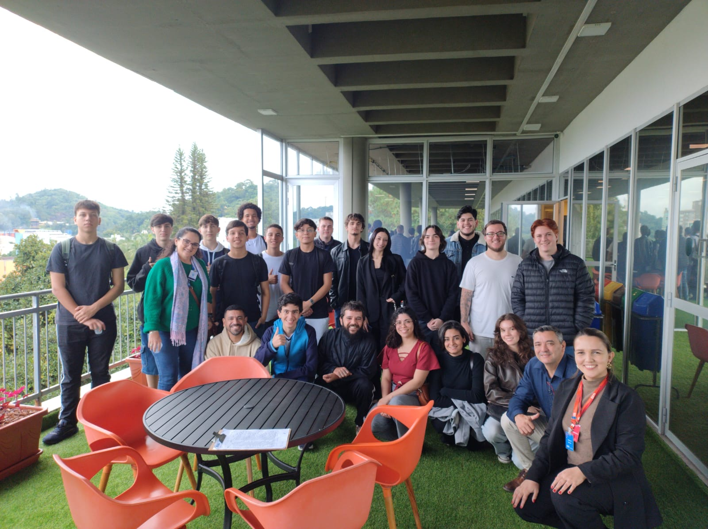

Curiosidade, expectativa e vontade de aprender tudo.
01
Sobre mim
Meu nome é Maria Letícia, tenho 19 anos, estudo Sistemas de Informação na FURB e estou fazendo o curso de Front-End do Entra21 no SENAI.
Gosto da tecnologia porque ela junta lógica, criatividade e evolução constante. Durante o curso, cada aprendizado novo foi uma forma de perceber que uma ideia simples pode virar algo visual, interativo e funcional.
02
Como foi o curso
No começo, eu queria aprender a criar páginas do zero e entender melhor como o Front-End funcionava. Com o tempo, percebi que desenvolver uma página exige muita organização, atenção aos detalhes, prática e paciência.
As aulas com a professora Karize deixaram esse processo mais leve. Ela foi dedicada, atenciosa, paciente e gentil, sempre nos ajudando e tirando nossas dúvidas.
Exercícios, testes, erros e pequenas vitórias quando tudo funcionava.
Conversas, risadas e um clima que deixou o curso mais leve.
Mais confiança para continuar estudando e melhorar cada vez mais.
03
Expectativas atendidas
Aprender a criar sites
Eu queria entender a estrutura de uma página e ganhar mais segurança para começar.
Praticar de verdade
HTML, CSS e JavaScript apareceram na prática, com atividades e ajustes constantes.
Mais confiança
Termino esse período sabendo que evoluí e que posso continuar aprendendo com constância.
04
Turma e colegas
Também foi muito legal conhecer pessoas novas, dividir conversas e viver esse período com uma turma legal e descontraída que deixou as aulas mais leves.

Foto da turma
Coloque a imagem em img/foto-turma.jpeg para personalizar essa memória.
05
Planos para o futuro
Para o futuro, quero ingressar no mercado de trabalho, evoluir cada vez mais na área de tecnologia, buscar estabilidade e felicidade profissional, crescer com constância e lembrar sempre de onde comecei.
Mensagem final
Obrigada, professora Karize
Obrigada pela dedicação, paciência, atenção e carinho durante as aulas. Seu jeito gentil de ensinar tornou o aprendizado mais leve e fez diferença nesse período tão importante.